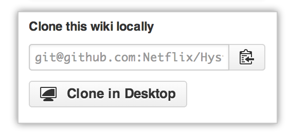

Because wikis are just Git repositories, you can make changes locally and push them to your repository using a Git workflow.
To work with Git, you'll need to be comfortable with our Mac, Windows, or command line tutorials.
Cloning wikis locally to your computer
Every wiki provides an easy way to clone its contents down to your computer:

If you're using our Mac or Windows programs, you can simply click Clone in Desktop to bring the wiki to your computer.
Otherwise, you can use the following command with the provided URL to clone the wiki repository to your computer.
git clone https://github.com/YOUR_USERNAME/YOUR_REPOSITORY.wiki.git # Clones the wiki locally
Once you have cloned the wiki, you can add new files, edit existing ones, and commit your changes. You and your collaborators can create branches when working on wikis, but only changes pushed to the master branch will be made live and available to your readers.
Naming wiki files
The file extensions of your wiki pages determine how your wiki content is rendered.
Wikis use our open-source Markup library to convert the markup, and it determines which converter to use by a file's extension. For example, if you name a file foo.md or foo.markdown, wiki will use the Markdown converter, while a file named foo.textile will use the Textile converter.
Tip: Be sure to write your content using a markup language that matches the extension, or your content won't render properly.
Creating your wiki page title
The filename determines the title of your wiki page. You can use the \ character to escape special characters, such as spaces and punctuation, from the filename. Here are some examples:
| Desired page title | File name |
|---|---|
| Everything is great! | Everything\ is\ great\!.md |
| Some things are "great." | Some\ things\ are\ \"great.\".md |
| Things are so-so & that's fine | Things\ are\ so\-so \&\ that\'s\ fine.md |
Warning: Don't use the following characters in your wiki page's titles: \ / : * ? " < > |
Users on certain operating systems won't be able to work with filenames containing these characters.
Creating footers and sidebars locally
You can add a custom sidebar or footer to your wiki to provide readers with more contextual information. This is easy to do online, but you can create and edit these elements locally, too.
If you create a file named _Footer.
Like every other wiki page, the extension you choose for these files determines how we render them.